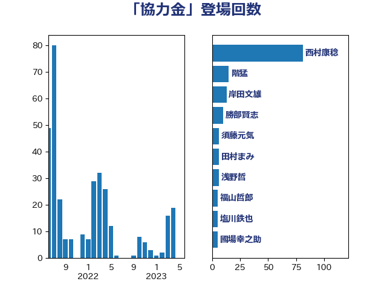

単語「協力金」

| 西村康稔 | 自由民主党 | 81 回 |
| 階猛 | 立憲民主党 | 15 回 |
| 岸田文雄 | 自由民主党 | 13 回 |
| 勝部賢志 | 立憲民主党 | 10 回 |
| 須藤元気 | 無所属 | 6 回 |
| 田村まみ | 国民民主党 | 6 回 |
| 浅野哲 | 国民民主党 | 6 回 |
| 福山哲郎 | 立憲民主党 | 5 回 |
| 塩川鉄也 | 日本共産党 | 5 回 |
| 國場幸之助 | 自由民主党 | 5 回 |
| 山際大志郎 | 自由民主党 | 4 回 |
| 小川淳也 | 立憲民主党 | 4 回 |
| 佐藤英道 | 公明党 | 4 回 |
| 高野光二郎 | 自由民主党 | 3 回 |
| 田村憲久 | 自由民主党 | 3 回 |
| 玄葉光一郎 | 立憲民主党 | 3 回 |
| 庄子賢一 | 公明党 | 3 回 |
| 加藤勝信 | 自由民主党 | 3 回 |
| たがや亮 | れいわ新選組 | 3 回 |
| 馬場伸幸 | 日本維新の会 | 2 回 |
| 赤池誠章 | 自由民主党 | 2 回 |
| 菅義偉 | 自由民主党 | 2 回 |
| 舟山康江 | 国民民主党 | 2 回 |
| 笠井亮 | 日本共産党 | 2 回 |
| 田村智子 | 日本共産党 | 2 回 |
| 田中健 | 国民民主党 | 2 回 |
| 滝波宏文 | 自由民主党 | 2 回 |
| 浅田均 | 日本維新の会 | 2 回 |
| 梶山弘志 | 自由民主党 | 2 回 |
| 柴田巧 | 日本維新の会 | 2 回 |
| 松川るい | 自由民主党 | 2 回 |
| 早稲田ゆき | 立憲民主党 | 2 回 |
| 岩谷良平 | 日本維新の会 | 2 回 |
| 岡田直樹 | 自由民主党 | 2 回 |
| 山田勝彦 | 立憲民主党 | 2 回 |
| 宮本徹 | 日本共産党 | 2 回 |
| 中村裕之 | 自由民主党 | 2 回 |
| 下野六太 | 公明党 | 2 回 |
| 青山周平 | 自由民主党 | 1 回 |
| 阿部司 | 日本維新の会 | 1 回 |
| 鈴木英敬 | 自由民主党 | 1 回 |
| 鈴木俊一 | 自由民主党 | 1 回 |
| 野中厚 | 自由民主党 | 1 回 |
| 野上浩太郎 | 自由民主党 | 1 回 |
| 赤澤亮正 | 自由民主党 | 1 回 |
| 角田秀穂 | 公明党 | 1 回 |
| 西田昌司 | 自由民主党 | 1 回 |
| 蓮舫 | 立憲民主党 | 1 回 |
| 羽田次郎 | 立憲民主党 | 1 回 |
| 竹谷とし子 | 公明党 | 1 回 |
| 稲田朋美 | 自由民主党 | 1 回 |
| 秋野公造 | 公明党 | 1 回 |
| 石川博崇 | 公明党 | 1 回 |
| 田名部匡代 | 立憲民主党 | 1 回 |
| 玉木雄一郎 | 国民民主党 | 1 回 |
| 渡辺創 | 立憲民主党 | 1 回 |
| 河西宏一 | 公明党 | 1 回 |
| 森山浩行 | 立憲民主党 | 1 回 |
| 森屋隆 | 立憲民主党 | 1 回 |
| 梅谷守 | 立憲民主党 | 1 回 |
| 柚木道義 | 立憲民主党 | 1 回 |
| 枝野幸男 | 立憲民主党 | 1 回 |
| 斉藤鉄夫 | 公明党 | 1 回 |
| 後藤茂之 | 自由民主党 | 1 回 |
| 平林晃 | 公明党 | 1 回 |
| 平木大作 | 公明党 | 1 回 |
| 川田龍平 | 立憲民主党 | 1 回 |
| 岸真紀子 | 立憲民主党 | 1 回 |
| 岩渕友 | 日本共産党 | 1 回 |
| 岡本三成 | 公明党 | 1 回 |
| 小森卓郎 | 自由民主党 | 1 回 |
| 小宮山泰子 | 立憲民主党 | 1 回 |
| 宮崎雅夫 | 自由民主党 | 1 回 |
| 吉良よし子 | 日本共産党 | 1 回 |
| 吉川元 | 立憲民主党 | 1 回 |
| 伊藤渉 | 公明党 | 1 回 |
| 伊藤岳 | 日本共産党 | 1 回 |
| 中島克仁 | 立憲民主党 | 1 回 |
| 中山展宏 | 自由民主党 | 1 回 |